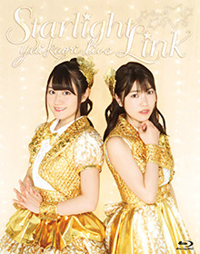

- 
＜BD＞
品番：KIXM-288
価格：￥6,900+税
＊初回特典：スペシャルBOX仕様
＜DVD＞
品番：KIBM-667～8
価格：￥6,900+税
【収録内容】
YUIKAORI LIVE「Starlight Link」
2017.2.11 Yoyogi National Stadium First Gymnasium
-Prologue-
01. 星降る夜のハッピーリンク
02. Shooting☆Smile
03. ウェィカッ!!
-MC 1-
04. 恋するストール
05. marble
06. B Ambitious!
-MC 2-
07. PUPPY LOVE!!
08. LUCKY DUCKY!!
＜Short Movie＞(コンビ愛測定テスト!!前半戦)
09. オリオンからのメッセージ
10. もうひとりの私
11. Telephone Call (石原夏織ソロ)
12. Calling Calling
13. NEO SIGNALIFE
＜Short Movie＞(コンビ愛測定テスト!!後半戦)
14. Future Strike (小倉 唯ソロ)
-MC 3-
15. 駆け抜けてBlue
16. Intro Situation
17. カナリア
18. Promise You!!
＜ENCORE＞
19. 真夏ハプニング
20. 君のYELL
-MC 4-
21. Our Steady Boy
＜W ENCORE＞
22. Ring Ring Rainbow!!
-Epilogue-
★映像特典★
＜Making of LIVE TOUR「Starlight Link」＞